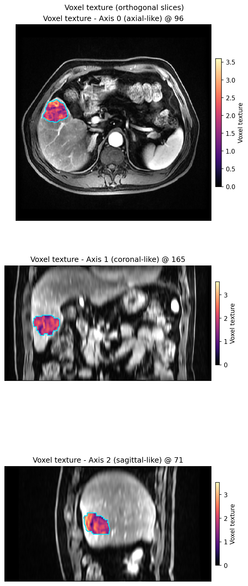

Voxel texture feature maps
Goal: compute and display voxel-level texture maps — local neighbourhood
entropy and densified voxel_radiomics columns (e.g. GLCM) — as publication
2D slices.
local_entropy is a built-in extractor (fast; no PyRadiomics).
voxel_radiomics uses PyRadiomics / TorchRadiomics for per-voxel maps; keep
the enabled featureClass list small for interactive demos.
Walk-through (Guide): Voxel texture and GPU. For multi-GPU cohort scaling benchmarks and parallel scheduling, see Parallel and checkpoints. This page keeps runtime / backend notes that the gallery does not repeat.
Who builds the texture matrices
A voxel texture class has two stages: build the matrix (GLCM, GLDM, GLRLM, GLSZM, NGTDM), then evaluate the feature formulas. First-order has no co-occurrence matrix: it gathers the kernel window and reduces it. HABIT exposes three runtimes:
Runtime |
Texture matrices |
Feature formulas |
|---|---|---|
PyRadiomics (CPU) |
|
NumPy |
C matrices + TorchRadiomics |
Same C extension |
PyTorch (GPU) |
HABIT CUDA |
|
Same TorchRadiomics formulas (GPU) |
Upstream pytorchradiomics
is the middle row: every _calculateMatrix still calls
cMatrices.calculate_glcm (and the GLDM / GLRLM / GLSZM / NGTDM
siblings) and then self.tensor(...). HABIT vendors that code under
habit.kernels.radiomics.torchradiomics and adds GPU matrix builders
behind use_gpu_matrices (default "auto": on when the torch device
is CUDA). Their README GLCM 636 s → 23.8 s on a \(16^3\) job is the
middle row vs PyRadiomics (CPU), not HABIT CUDA.
First-order in HABIT gathers the kernel window and computes the reductions on CUDA. That is not a C texture matrix, so the middle column does not apply.
Simulated three-way comparison
End-to-end voxel-based execute(), dtype=torch.float64, n = 5
repeats on a fixed volume (mean ± sample standard deviation):
Gaussian
N(300, 80), shape(20, 48, 48), seed04096 ROI voxels,
kernelRadius=3,binWidth=25,voxelBatch=512first-order: Energy, Entropy, Mean, 90Percentile, Uniformity; GLCM: JointEntropy, Idm, Contrast; GLDM: DependenceEntropy, LargeDependenceEmphasis, SmallDependenceEmphasis; GLRLM: ShortRunEmphasis, RunPercentage, GrayLevelNonUniformity; GLSZM: ZonePercentage, LargeAreaEmphasis, ZoneVariance; NGTDM: Coarseness, Contrast, Busyness
hardware: NVIDIA GeForce RTX 3070 Laptop GPU
Column names:
PyRadiomics (CPU) — C-extension matrices and NumPy formulas (first-order: CPU neighbourhood stats)
C matrices + TorchRadiomics — C-extension matrices, GPU formulas (
use_gpu_matrices=false)HABIT CUDA — GPU matrices and GPU formulas (
use_gpu_matrices=true; first-order gather + formulas on CUDA)
Time (s), mean ± s.d.
Class |
PyRadiomics (CPU) |
C matrices + TorchRadiomics |
HABIT CUDA |
|---|---|---|---|
First-order |
0.760 ± 0.030 |
n/a |
0.037 ± 0.023 |
GLCM |
2.556 ± 0.042 |
0.331 ± 0.033 |
0.197 ± 0.087 |
GLDM |
0.189 ± 0.007 |
0.182 ± 0.014 |
0.154 ± 0.040 |
GLRLM |
1.567 ± 0.074 |
1.060 ± 0.014 |
0.530 ± 0.070 |
GLSZM |
0.138 ± 0.004 |
0.152 ± 0.008 |
0.168 ± 0.006 |
NGTDM |
0.175 ± 0.007 |
0.150 ± 0.003 |
0.131 ± 0.005 |
GLCM and GLRLM are the C-extension bottlenecks, so GPU formulas help and GPU matrices help again. First-order has no texture matrix; HABIT CUDA is the kernel gather plus reductions on device. GLSZM on this 4096-voxel toy is already cheap on CPU (launch overhead).
Accuracy, max abs. error of the feature maps (worst feature in the class), mean ± s.d. over the same 5 repeats:
Class |
C+Torch vs PyRadiomics |
HABIT CUDA vs PyRadiomics |
HABIT CUDA vs C+Torch |
|---|---|---|---|
First-order |
n/a |
\(1.49\times 10^{-8} \pm 0\) |
n/a |
GLCM |
\(1.42\times 10^{-14} \pm 0\) |
\(1.42\times 10^{-14} \pm 0\) |
\(7.77\times 10^{-17} \pm 3.0\times 10^{-17}\) |
GLDM |
\(1.78\times 10^{-15} \pm 0\) |
\(1.78\times 10^{-15} \pm 0\) |
0 |
GLRLM |
\(3.55\times 10^{-15} \pm 0\) |
\(3.55\times 10^{-15} \pm 0\) |
0 |
GLSZM |
\(8.88\times 10^{-16} \pm 0\) |
\(8.88\times 10^{-16} \pm 0\) |
0 |
NGTDM |
\(5.55\times 10^{-16} \pm 0\) |
\(5.55\times 10^{-16} \pm 0\) |
\(1.67\times 10^{-16} \pm 0\) |
Texture C+Torch / HABIT CUDA vs PyRadiomics is NumPy vs torch formula
order, not a matrix mismatch. HABIT CUDA vs C+Torch sits at machine
epsilon because integer count matrices are bit-identical
(tests/kernels/test_*_gpu_parity.py, 81 cases). First-order is
looser (\(10^{-8}\)) because percentiles use different quantile
algorithms. Force the matrix backend with use_gpu_matrices: true /
false on the voxel_radiomics Spec.
Clinical large-tumor three-way benchmark
On small synthetic toys (e.g. 4,096 voxels above), kernel launch overhead and CUDA driver latency dilute the full power of GPU acceleration. In realistic clinical imaging, however, tumors often comprise tens of thousands of voxels. Under these large workloads, the performance bottleneck shifts completely:
Pure PyRadiomics (CPU): The single-threaded C extension (
cMatrices) must iterate voxel-by-voxel across millions of potential neighbor pairs. On large volumes, calculation times skyrocket into several minutes per subject.C matrices + TorchRadiomics (GPU): Offloading feature formulas to PyTorch helps, but the texture matrix construction remains pinned to the single-threaded CPU loop. Furthermore, large matrices must undergo costly host-to-device (H2D) memory transfer.
HABIT Built-in GPU: Both matrix construction (
gpumatrices) and feature evaluations execute entirely within GPU VRAM with zero host-to-device intermediate copy, yielding dramatic speedups on large clinical lesions.
The benchmark below evaluates these three runtimes on clinical liver lesion
cases from the HABIT demo cohort (hardware: NVIDIA GeForce RTX 3070 Laptop GPU,
binWidth=25, kernelRadius=1):
Subj001 (34,694 ROI voxels)
Feature Task |
Pure PyRadiomics (CPU) |
C + TorchRadiomics (GPU) |
HABIT Built-in GPU |
Speedup (vs CPU / vs C+Torch) |
|---|---|---|---|---|
GLCM Contrast |
68.71 s |
7.54 s |
2.68 s |
25.6× / 2.8× |
GLCM 4 features |
85.33 s |
7.04 s |
3.02 s |
28.3× / 2.3× |
GLRLM (2 features) |
13.25 s |
8.02 s |
2.61 s |
5.1× / 3.1× |
First-order (4 features) |
5.30 s |
n/a |
1.99 s |
2.7× / n/a |
Subj005 (80,084 ROI voxels — massive tumor benchmark)
Runtime Architecture |
Matrix Construction |
Feature Formula |
Time (s) |
Speedup |
|---|---|---|---|---|
Pure PyRadiomics (CPU) |
Single-threaded C (CPU) |
NumPy (CPU) |
414.58 s (~7 min) |
1.0× |
C + TorchRadiomics (GPU) |
Single-threaded C (CPU) |
PyTorch (GPU) |
39.62 s |
10.5× |
HABIT Built-in GPU |
Parallel CUDA (GPU) |
PyTorch (GPU) |
7.59 s |
54.6× |
On an 80k-voxel volume, HABIT collapses a 7-minute CPU bottleneck down to 7.6 seconds, and outperforms upstream TorchRadiomics by 5.2× by eliminating the CPU matrix construction.
Cloud RTX 4080 SUPER Benchmark (54,913 ROI voxels — full 90-feature extraction)
Measured on an NVIDIA GeForce RTX 4080 SUPER (32 GiB) with Intel Xeon Platinum 8352V CPU:
Runtime Architecture |
Matrix Construction |
Feature Formula |
Time (s) |
Speedup |
|---|---|---|---|---|
Pure PyRadiomics (CPU) |
Single-threaded C (CPU) |
NumPy (CPU) |
19.48 s |
1.0× |
C + TorchRadiomics (GPU) |
Single-threaded C (CPU) |
PyTorch (GPU) |
1.64 s |
11.9× |
HABIT Built-in GPU |
Parallel CUDA (GPU) |
PyTorch (GPU) |
0.70 s |
27.7× |
Numerical parity across all 54,913 voxels × 90 features (~4.94M values):
C + TorchRadiomics vs HABIT Built-in GPU: Max absolute difference = 0.0 (100% bit-identical matrix construction).
Pure CPU vs HABIT Built-in GPU: Mean absolute difference across all values = 0.00137 (Energy/TotalEnergy max difference = 0.5 on values ~2.45M, relative error ~2e-7 due to float32 vs float64 summation). All mathematical definitions remain identical.
Multi-GPU Cohort Scaling Benchmark (16 subjects — 878,608 ROI voxels, 90 features)
Scaling dense 3D texture feature extraction across multiple GPUs on an AutoDL cloud host (5× NVIDIA GeForce RTX 4080 SUPER 32 GiB each, 2× Intel Xeon Platinum 8352V 144 logical CPUs, 503 GiB RAM). Each subject contains 54,913 ROI tumor voxels (total 878,608 ROI voxels across the cohort), extracting full 90 radiomics features:
Scenario |
Execution Device |
Workers |
Wall Time (s) |
Throughput (subj/min) |
Speedup vs CPU Serial |
|---|---|---|---|---|---|
0 GPU (CPU Serial) |
CUDA=-1 (CPU) |
1 |
263.49 s |
3.64 |
1.0× |
0 GPU (CPU Parallel) |
CUDA=-1 (CPU) |
2 |
138.03 s |
6.96 |
1.9× |
0 GPU (CPU Parallel) |
CUDA=-1 (CPU) |
4 |
79.23 s |
12.12 |
3.3× |
0 GPU (CPU Parallel) |
CUDA=-1 (CPU) |
8 |
49.16 s |
19.53 |
5.4× |
1 GPU (Cold Pool) |
CUDA=0 (GPU) |
1 |
19.30 s |
49.73 |
13.7× |
1 GPU (Cold Pool) |
CUDA=0 (GPU) |
2 |
17.44 s |
55.04 |
15.1× |
1 GPU (Warm Pool) |
CUDA=0 (GPU) |
1 |
12.41 s |
77.33 |
21.2× |
5 GPUs (Cold Pool) |
CUDA=0,1,2,3,4 |
2 |
11.61 s |
82.68 |
22.7× |
5 GPUs (Cold Pool) |
CUDA=0,1,2,3,4 |
4 |
14.05 s |
68.32 |
18.8× |
5 GPUs (Cold Pool) |
CUDA=0,1,2,3,4 |
5 |
14.78 s |
64.97 |
17.8× |
5 GPUs (Warm Pool) |
CUDA=0,1,2,3,4 |
5 |
4.16 s |
231.03 |
63.4× |
Architectural Highlights:
Why GPU Accelerates Voxel Radiomics: In purely CPU-bound habitat workloads (such as
rawfeatures followed by sklearn k-means clustering), computation is bounded by CPU single-core operations, so multi-GPU provides zero benefit over multi-CPU. In contrast,voxel_radiomicsperforms dense neighborhood tensor operations; HABIT’s parallel CUDA matrix generator and TorchRadiomics offload these computations onto GPU CUDA cores, unlocking drastic speedups (63.4× vs CPU serial, 11.8× vs 8 CPU cores).Per-Worker GPU Isolation: When
cap_workers_to_gpu_pool=Trueis configured onRunPolicy, HABIT invokespin_worker_visible_cuda_device()inside each child worker initializer. This exposes a single dedicated GPU per worker process (slot 0 sees card 0, slot 1 sees card 1, etc.), eliminating inter-process CUDA memory collisions and context switching overhead.Cold Pool vs Warm Pool Overhead: In cold one-shot execution, worker processes must be spawned fresh, import PyTorch and CUDA runtime libraries (~4s), initialize GPU contexts on their first subject (~2.4s), and gracefully join on termination (~3s). When using persistent worker pools (e.g. inside
fit_predict()or viawith backend.reuse_workers():), workers and CUDA contexts remain resident in memory. This eliminates process startup/teardown friction and allows the 5-GPU cluster to process the entire 16-subject cohort in 4.16 seconds (over 230 subjects/minute).Worker count sweet spot on small cohorts (why 2 workers beat 5 workers on cold pools): Single-subject GPU computation is exceptionally fast (~0.71 s), meaning total raw compute across all 16 subjects is only ~11.4 s. With 2 workers (8 cases/worker), raw compute takes ~5.7 s plus ~5.9 s for process spawning and CUDA primary context initialization. With 5 workers in a cold pool (3–4 cases/worker), raw compute drops to ~2.8 s, but spawning 5 independent child processes, initializing 5 CUDA contexts, and managing 5 IPC queues introduces ~11.9 s of fixed runtime overhead (plus minor load imbalance as 16 is not divisible by 5). The ~2.9 s compute reduction is outweighed by the startup overhead. For small cohorts (<50 subjects) in cold pools, 2–4 workers represent the optimal throughput sweet spot. Once the pool is warmed up or when processing large clinical cohorts (100–1000+ subjects) where compute dwarfs startup, all 5 GPUs deliver linear multi-worker scaling (4.16 s, 231 subjects/min).
Python API (sklearn-short)
The figure below is written by the voxel-texture gallery (Voxel texture and GPU). Reproduce it:
python docs/source/examples/scripts/voxel_texture_demo.py
Or paste the same load + plot the gallery shows:
from habit.contracts import cohort_from_directory
from habit.datasets import fetch_demo
from habit.kernels import local_entropy_map
from habit.viz import plot_voxel_texture_slice
# Change DATA / MODALITY / ROI to your preprocessed layout
DATA = fetch_demo() # or "demo_data/preprocessed"
MODALITY = "LAP"
ROI = "LAP"
subject = cohort_from_directory(DATA, modalities=(MODALITY,), roi=ROI)[0]
image_vol = subject.image(MODALITY)
mask_vol = subject.mask(ROI)
entropy = local_entropy_map(image_vol.data, kernel_size=5, bins=32)
fig = plot_voxel_texture_slice(
entropy, anatomy=image_vol, roi_mask=mask_vol,
)
For voxel_radiomics GLCM columns, create a
VoxelFeatureField then pass it with
feature=0 (or a column name) — see the Voxel texture and GPU
script. Default mode="overlay" paints opaque feature colours inside
the ROI on greyscale anatomy (optional cyan contour). alpha<1 is the
explicit translucent option. mode="side_by_side" adds a sibling anatomy
panel when you also want the raw image.
Layouts
plot_voxel_texture_slice() is 2D-slice only (matplotlib
[viz] extra):
mode="overlay"— greyscale anatomy + opaque feature in ROI (default)mode="side_by_side"— anatomy + ROI contour | feature (sibling panel)mode="feature_only"— feature map alone
Omit axis on 3D volumes for three orthogonal panel rows. Panels use
display_convention="radiological" (pass anatomy as an ImageVolume so
direction is not dropped). There is no built-in 3D volume renderer for
texture maps; use ITK-SNAP / 3D Slicer / napari for full volumetric browsing.
{kind=link}

Default overlay layout
(plot_voxel_texture_slice()).
Also see
Examples gallery: Voxel texture and GPU
Kernel:
local_entropy_map()Habitat-map graph figures: Graph topology features